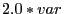

Next: tupledict.clean() Up: tupledict Previous: tupledict.sum()
Returns a linear expression that contains one term for each tuple that
is present in both the tupledict and in the argument
dict. For example, x.prod(coeff) would contain term
 if x[1,2] = var and coeff[1,2] = 2.0.
Arguments:
coeff: Python dict that maps tuples to coefficients.
pattern: Pattern to match for a key tuple.
Example usage:
x = m.addVars([(1,2), (1,3), (2,3)]) coeff = dict([((1,2), 2.0), ((1,3), 2.1), ((2,3), 3.3)]) expr = x.prod(coeff) # LinExpr: 2.0 x[1,2] + 2.1 x[1,3] + 3.3 x[2,3] expr = x.prod(coeff, '*', 3) # LinExpr: 2.1 x[1,3] + 3.3 x[2,3]